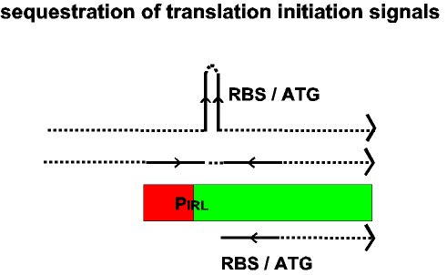

 |
| The left end of an IS is shown. The terminal IRL is represented as a red box. The Tpase promoter, pIRL, is indicated. Transcription from the exterior (dotted black line) results in a transcript with an inverted sequence repeat (solid black line) which can form a stable secondary structure and sequester the ribosome binding site (RBS) and/ or the Tpase initiation codon (ATG). |